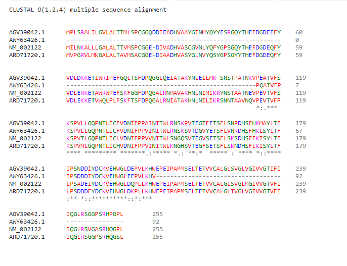

Lo primero que hicimos fue buscar 3 secuencias (en formato fasta) de organismos distintos que salieron en los resultados del Blast del ejercicio anterior:
Luego, corrimos estas secuencias junto con la original (correspondiente al homo sapiens) en la herramienta de MSA online llamada Clustal Omega.
Por un lado obtuvimos la alineación de las secuencias, y las coincidencias entre ellas:
Que a su vez nos dió la siguiente matriz identidad:
1: AGV39042.1 100.00 84.78 74.41 74.41
2: AWY63426.1 84.78 100.00 75.00 77.17
3: NM_002122 74.41 75.00 100.00 81.57
4: ARD71720.1 74.41 77.17 81.57 100.00
Por otro lado obtuvimos el siguiente cladograma:

A partir de lo cual podemos deducir que, si bien todas las especies están relacionadas en un punto inicial y fueron evolucionando en distintas especies, la primera y la segunda (Norway rat y Mus musculus), tienen un antepasado aún más cercano entre si. Lo cual tiene sentido, ya que ambas forman parte de la familia de roedores.
Mientras que las 2 especies restantes (Pig y Human) no tendrían mayor cercanía entre sí, ni con las mencionadas previamente.